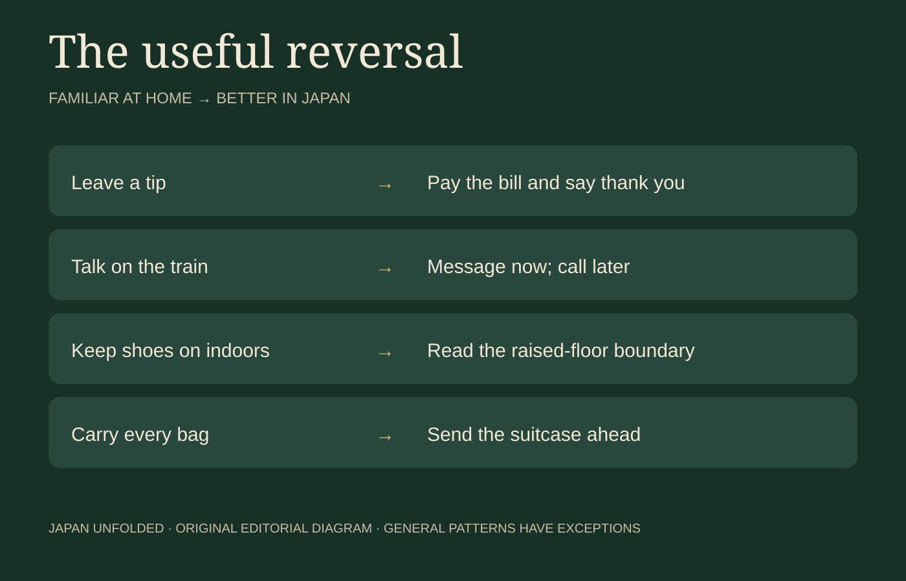

Japan with
Japan withThe first surprise arrives before the first shrine. A restaurant server returns the money you meant as a tip. A pharmacy item that is ordinary at home cannot legally enter Japan. A station gate accepts the card in your phone, but the fast train beyond it needs another ticket. None of these moments means Japan is impossibly rule-bound. They mean the visible journey runs on invisible agreements.
This list ranks usefulness, not cultural importance. It favors information that can prevent a legal problem, a missed train, an uncomfortable bath or an avoidable burden on someone else. It also avoids the lazy myths: Japanese people do talk on trains, cashless payment is common, tattoos are not illegal, and eating while walking is not a nationwide crime. Context is the real rule.
Do not tip—but do carry some cash
Restaurants, taxis and hotels generally do not expect a tip. Leave notes on the table and a member of staff may chase you to return what looks like forgotten money. Pay the stated amount and offer a clear arigato gozaimashita. Private guides accustomed to overseas practice can be an exception, but a tip is still not automatically required.
Japan is no longer simply a “cash country.” Major hotels, chains, city restaurants and shops commonly accept cards or mobile payments. The trap is the sudden exception: a rural bus, temple box, small restaurant, clinic or old ticket machine. Carrying a credit card, an IC card and a modest amount of yen is safer than betting the trip on one payment rail.
The missing trash can is asking you to carry the wrapper

Public bins can be difficult to find. The practical response is a small bag for wrappers until your hotel, station or an appropriate bin. Convenience-store bins primarily serve customers; make a purchase and follow the labels rather than treating the nearest shop as municipal collection.
“Never eat while walking” is too broad. Festival streets and market stalls may be designed for immediate eating, while carrying open food through a crowded shop or commuter train is inconsiderate. Long-distance trains with tray tables are different. Ask what the space is for, finish food near the seller when that is the local pattern, and never leave packaging behind.
The floor changes before the shoe rule does
Look down at the entrance. A lower stone or tiled area often marks where outside shoes stop; the raised wood or tatami beyond it is indoor space. Homes, ryokan, some restaurants, temples and even fitting rooms may ask you to remove shoes. Signs and staff matter more than guessing.
Indoor slippers may be provided, but slippers usually do not belong on tatami. Toilet slippers belong inside the toilet; wearing them back into the dining room is the classic avoidable mistake. Clean socks are more useful than trying to perform a perfect bow. If the boundary is unclear, pause and ask.
A Japanese bath begins before you enter the water
An onsen or public bath is not a swimming pool. Wash and rinse at the shower stations, enter without swimwear in the gender-separated bath, keep the small towel out of the water and tie up long hair. Phones and photography do not belong in the changing or bathing area.
Tattoos are legal, but individual baths, pools and gyms may restrict entry. Policies are slowly changing. Some accept small covered tattoos; others advertise tattoo-friendly hours, and private baths avoid the shared-space issue. Check the actual facility before booking instead of assuming either universal rejection or universal acceptance.
A reservation is a promise, not a rough suggestion
A ten-minute delay can affect a small counter restaurant serving every guest together, a guided experience with timed entry or a ryokan dinner prepared for one arrival. If you will be late, contact the business. A no-show can waste ingredients and block the seat from anyone else.
Do not reserve several restaurants “just in case.” Confirm cancellation rules before clicking purchase, especially for rail products, activities and high-end dining. Japan’s punctuality is not a test of moral worth; it is how tightly shared capacity is coordinated.

You may see it without having permission to photograph it

A street being open does not make every doorway public. Obey signs at temples, gardens and museums; do not enter private lanes for a photograph. Permission to photograph an object also does not automatically grant permission to publish a stranger’s identifiable face.
Kyoto’s official guidance is especially direct: do not follow, touch, block or photograph geiko and maiko without permission. They are working people, not street mascots. At stations, stay behind safety lines and avoid tripods, selfie sticks or flashes that obstruct passengers or drivers.
Quiet is not silence. It is room for everyone else.

People do speak on trains. The practical line is disturbance: avoid phone calls, loud conversation and sound leaking from a device. Let passengers leave before boarding, follow platform markings, move away from doors, and offer priority seats to people who need them. A maternity badge can signal a need that is not otherwise visible.
Do not stop immediately beyond a ticket gate, at the top of stairs or in the center of a narrow pavement. With a backpack in a crowded car, hold it in front or use the rack. Official guidance now favors standing still on escalators rather than teaching visitors a permanent “Tokyo left, Osaka right” rule.
Your prescription can be legal at home and prohibited in Japan
This is the item to investigate before packing, not at customs. Japan controls medicines by active ingredient and amount. In general, up to one month of many prescription medicines can enter for personal use without Import Confirmation, but controlled drugs, stimulants’ raw materials, injections and larger quantities have different procedures.
A prescription from home is not universal permission. Some medicines—including products containing amphetamine—cannot be imported by an individual even when legally prescribed elsewhere. Narcotics such as morphine or fentanyl and medicines containing substances such as lisdexamfetamine require advance permission under specified conditions. Cannabis and many cannabis-derived products create separate risks. Check the Ministry of Health, Labour and Welfare and Narcotics Control Department with the exact generic ingredient.
Japan is safe. It is not free from earthquakes, heat or weather
Low crime does not remove natural risk. Save 110 for police and 119 for ambulance or fire. Learn the location of your accommodation’s exits. During strong shaking, protect yourself from falling objects and follow staff or official instructions rather than immediately rushing outside. A tsunami warning near the coast means moving promptly to higher ground or a designated evacuation place.
Summer heat can be dangerous even when the itinerary looks easy. Typhoons and heavy rain can suspend flights, ferries and trains far from a storm’s center. Use the Japan Meteorological Agency, municipal alerts and transport operators for live decisions. Travel insurance should cover treatment, disruption and the activities you actually plan to do.
Get an IC card—but know what it does not unlock
A Suica, PASMO, ICOCA or another interoperable transport IC card will probably become the object you touch most often. Tap at ordinary railway gates, buses and participating shops; the stored balance removes the repeated work of calculating local fares and handling coins.
Major cards work across many participating areas. An ICOCA bought in Kansai can be accepted in Suica and PASMO areas, and vice versa, where the nationwide IC symbol appears. That does not mean every railway, rural bus or ferry accepts it. It also does not automatically buy a Shinkansen reservation, limited-express supplement or reserved seat.
Tourist products have their own rules. TOURIST PASMO is valid for 28 days and unused value is not refunded. Welcome Suica options and sales locations can change; Welcome Suica Mobile is designed for eligible iPhone and Apple Watch users. Physical ICOCA cards are widely available in the JR West area, but some machines require cash for purchase or charging. Check the operator you will meet at the airport rather than memorizing one universal answer.
The bigger advantage is psychological. Once local transport stops feeling like a separate purchase every time, you can leave the famous station one stop early, follow a shopping street or buy a drink without searching for coins. The card does not plan the journey. It gives you room to change it.
The one Japanese idea connecting all ten
Omoiyari (思いやり) means consideration for other people—imagining how your action affects someone you may not know. It explains more than a list of prohibitions: keeping a doorway open, calling when late, carrying your rubbish and lowering your voice are ways to leave shared space usable.
A simple phrase helps when the rule is unclear: Daijōbu desu ka?—“Is this okay?” Japanese travel becomes easier when asking replaces pretending. Practice useful Japanese free, with no signup, in the Japanese Training Lab, then learn while playing in DraMap for iPhone.
Official sources and further reading
- JNTO: Japanese customs and etiquette
- JNTO: travelling by train and bus
- JNTO: IC travel cards
- PASMO: current card types and limitations
- JR West: ICOCA nationwide interoperability
- Tokyo Metro: official subway considerations
- Ministry of Health, Labour and Welfare: bringing medicines into Japan
- Narcotics Control Department: controlled medicine permissions
- Japan Customs: prohibited and restricted articles
- JNTO: onsen etiquette and tattoo options
- Kyoto City: responsible sightseeing and photography
- Japan Meteorological Agency: live disaster information
Operational details were checked on October 26, 2026. Transport products, facility rules and legal procedures can change; verify the linked official source before travel.

See the systems become real streets.
Walk Japan with me on TikTok LIVE, then learn useful Japanese while playing in DraMap for iPhone.
Japan Unfolded is independently edited by Yuji Shimizu, creator of DraMap. The app link is publisher promotion; the ranking and practical recommendations are editorial judgments based on the cited official guidance.